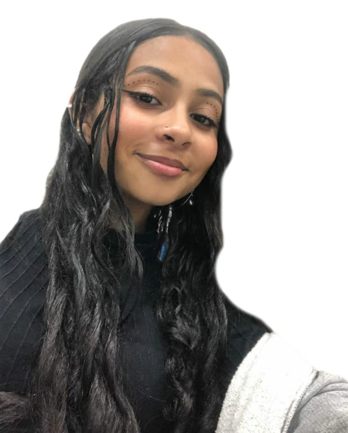

Portfólio

Com 18 anos e apaixonada pelo mundo das mídias digitais, estou mergulhando de cabeça no curso de
multimídias
com o objetivo claro de me especializar no design digital. Estou absorvendo conhecimentos essenciais em
design gráfico, animação, UX/UI e outras áreas fundamentais para criar experiências digitais inovadoras
e
envolventes.
Quero não apenas criar designs visualmente atraentes, mas também funcionais e intuitivos, que impactem
positivamente a vida das pessoas e as conectem de maneiras significativas com as marcas e produtos que
represento.
Tecnologias
projeto feito por illustraitor e figma:
objetivo
Meu objetivo no design digital é criar soluções inovadoras que não apenas impressionem visualmente, mas
também elevem a experiência do usuário a novos patamares. Busco integrar funcionalidade e estética de forma
harmoniosa, garantindo interfaces intuitivas que facilitam a interação e a navegação. Com foco na
usabilidade, busco sempre entender as necessidades e expectativas dos usuários para desenvolver designs que
não só atendam, mas superem suas expectativas. Minha missão é contribuir para a criação de experiências
digitais memoráveis, que deixem uma marca positiva e duradoura na vida das pessoas.
.png)